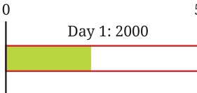
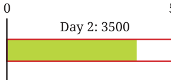
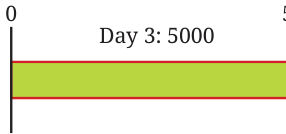
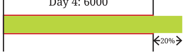
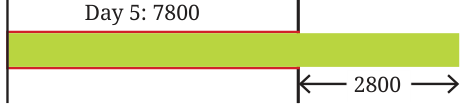
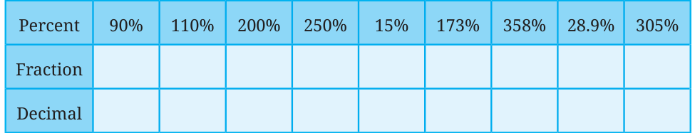

Percentages Greater than 100
Till now, we saw percentages with a value 100 or less than 100. Can there be percentages with a value more than 100? What could it mean when a percentage is greater than 100? Let us explore.
Example 6: Kishanlal recently opened a garment shop. He aims to achieve a daily sales of at least ₹5000. The sales on the first 2 days were ₹2000 and ₹3500. What percentage of his target did he achieve?
The percentage target achieved is visualised below.


| Day 1 | Day 2 |
|---|---|
| \(\frac{2000}{5000} \times 100 = 40\%\) | \(\frac{3500}{5000} \times 100 = 70\%\) |
| \(40\% = \frac{40}{100} = \frac{2}{5} = 0.4\) | \(70\% = \frac{70}{100} = \frac{7}{10} = 0.7\) |
It is 40% on Day 1 and 70% on Day 2.
Another way of saying it is — he was 60% short of his target on Day 1 and 30% short of his target on Day 2.
In the next two days, he made ₹5000 and ₹6000 respectively. What percentage of his target are these values?
His target is ₹5000, and he made ₹5000 on Day 3 — this is 100%. On Day 4, he made ₹6000, which is 1000 more than his target.
What percentage of the target was achieved on Day 4?


| Day 3 | Day 4 |
|---|---|
| \(\frac{5000}{5000} \times 100 = 100\%\) | \(\frac{6000}{5000} \times 100 = 120\%\) |
| \(100\% = \frac{100}{100} = \frac{1}{1} = 1.0\) | \(120\% = \frac{120}{100} = \frac{6}{5} = 1.2\) |
1000 is 20% of 5000. Therefore, 6000, \((5000 + 1000)\) is \(100\% + 20\% = 120\%\) of 5000.
It can also be computed as \(\frac{6000}{5000} \times 100 = \frac{6}{5} \times 100 = 120\%\).
This means he achieved 120% of his target, i.e., 20% more than his target.
On Days 5 and 6 his sales were ₹7800 and ₹9550 respectively. Calculate the percentage of the target achieved on these days.

On Day 7, he achieved 150% of his target. On Day 8, he achieved 210% of his target. Find the sales made on these days.
Suppose on some day, he made ₹2500. This can be expressed as "He achieved \(\frac{1}{2}\) of his target" or "He achieved 50% of his target" or "He achieved 0.5 of his target". On some other day, he made ₹10,000. We can say "He achieved twice/double/2 times his target" or "He achieved 200% of his target".
Complete the table below. Mark the approximate locations in the following diagram.

Example 7: A farmer harvested 260 kg of wheat last year. This year, they harvested 650 kg of wheat. What percentage of last year’s harvest is this year’s harvest?
This year’s harvest \(= \frac{650}{260} \times 100 = 250\%\) of last year’s harvest.
250% indicates that it is 2.5 times the original value.